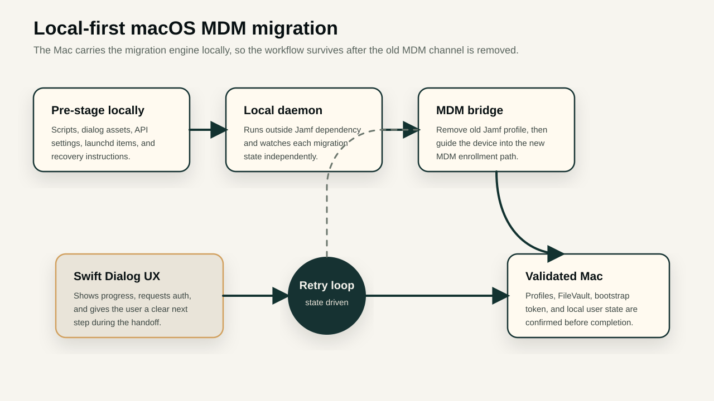
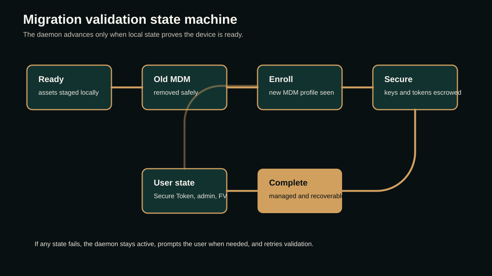
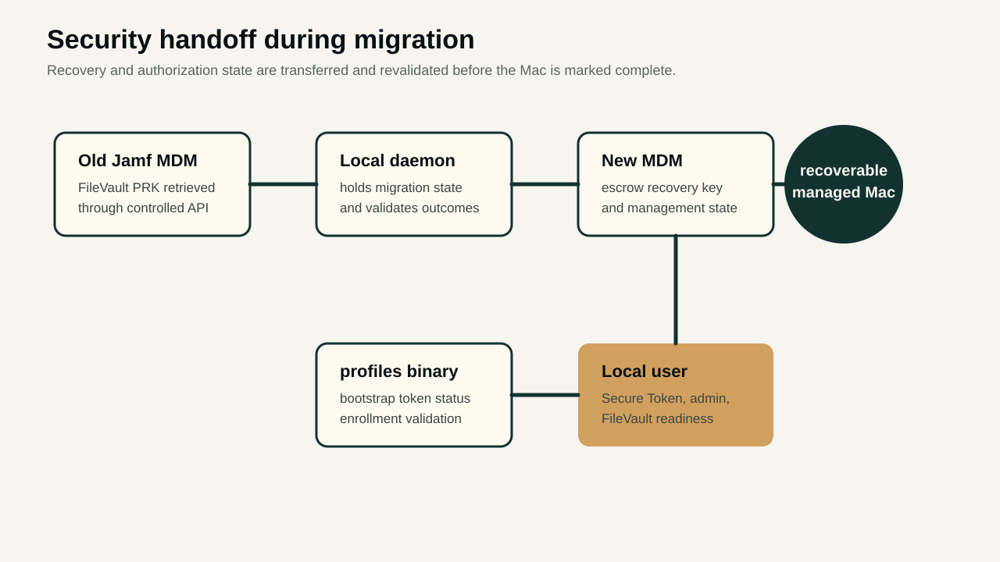

01 · Why
The migration must survive without the old MDM
The core design decision is independence. Before migration begins, the Mac receives everything it needs locally: scripts, configuration, Swift Dialog assets, launchd items, enrollment triggers, API configuration, validation logic, and recovery paths. Once the old MDM is removed, the workflow should not be waiting for the old Jamf server to rescue it.
That matters because the riskiest moment is the middle of the bridge. The old management channel is being removed, the new management channel may still be enrolling, and the user may need clear instructions. A local daemon keeps watching the device state during that gap.
02 · Architecture
A script that removes old MDM and keeps monitoring new enrollment
The migration script removes the old MDM profile when the device is ready, then continues to run as a local daemon. It monitors whether the new MDM enrollment has started, whether the expected management profiles appear, and whether the device reaches a stable enrolled state.
Pre-stage local assets
Install LaunchDaemon and migration scripts
Show guided UI with Swift Dialog
Collect user/admin state
Retrieve old Jamf FileVault recovery key through API
Remove old MDM profile
Start / guide new MDM enrollment
Monitor profiles binary until new profiles appear
Re-escrow bootstrap token
Validate FileVault, Secure Token, admin rights, and user state
Report migrated / needs attention
03 · Enrollment validation
Using the profiles binary as the local source of truth
On macOS, the workflow can use the profiles binary to inspect enrollment and profile state. The script checks whether old management artifacts are gone, whether new MDM profiles are present, and whether enrollment is progressing. This gives the daemon a local signal even when server-side inventory has not updated yet.
- Check for the old MDM profile before removal.
- Verify the new MDM enrollment profile after the user starts enrollment.
- Continue monitoring profile state until the Mac is managed by the new MDM.
- Use local validation before declaring the migration complete.

04 · User experience
Swift Dialog keeps the user inside the process
Swift Dialog gives the migration a controlled user interface. Instead of leaving the user with a terminal window or silent background activity, the workflow can explain what is happening, ask for authentication when needed, show progress, and guide the user into the enrollment step.
The same flow can grant temporary admin rights when the migration requires user-assisted enrollment or profile approval. Those rights should be time-bound, logged, and removed after the migration reaches the required state.
Operator note
The user should never feel abandoned during the MDM gap. If the new enrollment is not complete, the daemon keeps checking and the UI can keep giving the user a clear next step.
05 · FileVault
Transfer recovery key ownership before the old path disappears
FileVault is one of the most important migration risks. Before removing the old management channel, the workflow uses API access to the old Jamf MDM to retrieve the existing FileVault personal recovery key. The migration can then update or escrow that recovery information into the new management platform.
The script should not assume encryption is healthy just because FileVault is enabled. It evaluates the local user, Secure Token state, FileVault enablement, and whether the expected recovery information can be escrowed after the new MDM takes ownership.

06 · Bootstrap token
Re-escrow bootstrap token after new enrollment
After the device enrolls into the new MDM, the script uses the macOS profiles binary to re-escrow the bootstrap token. That step is important for modern macOS management because bootstrap token supports account, Secure Token, software update, and authorization workflows that enterprise teams depend on.
profiles status -type bootstraptoken
profiles install -type bootstraptoken
profiles status -type enrollmentThe daemon can retry and validate this state locally instead of assuming the first enrollment attempt completed every downstream security requirement.
07 · Local user state
Secure Token, admin rights, and FileVault are evaluated per user
A migration can look successful at the device level while still leaving the primary user in a bad state. The script therefore evaluates local users and updates the state needed for the migration to be operationally complete.
- Identify the active or primary local user.
- Check whether the user has Secure Token.
- Check whether the user has the needed admin rights during migration.
- Check whether FileVault is enabled and associated with the correct user state.
- If something is missing, prompt the user through the UI and collect the required authentication safely.
08 · Utility links
Tools and references that support the workflow
These references are useful when turning the playbook into production runbooks, scripts, and operator checks.
- swiftDialog on GitHubBuild the guided macOS user experience for migration prompts, progress, and required actions.
- swiftDialog documentationReference command syntax, UI patterns, progress behavior, and supported controls.
- Apple secure and bootstrap token guidanceUnderstand why Secure Token and bootstrap token escrow matter during modern macOS management.
- Jamf FileVault recovery key documentationValidate how recovery keys are viewed and operationally handled in Jamf Pro.
- Jamf FileVault API export guideUseful API reference for recovery-key handoff planning before old MDM removal.
09 · Why local-first works
The migration is driven by state, not hope
The strongest part of this design is that the script is not simply firing commands and assuming success. It is evaluating state. It asks: is the old MDM removed, is the new MDM present, is FileVault recoverable, is bootstrap token escrowed, does the local user have the right token and rights, and is the Mac actually manageable again?
That makes the migration safer for enterprise EUC teams. Devices can move between MDM platforms with less manual chasing, fewer stranded Macs, and clearer recovery when a user pauses, misses a prompt, loses network, or starts enrollment later than expected.